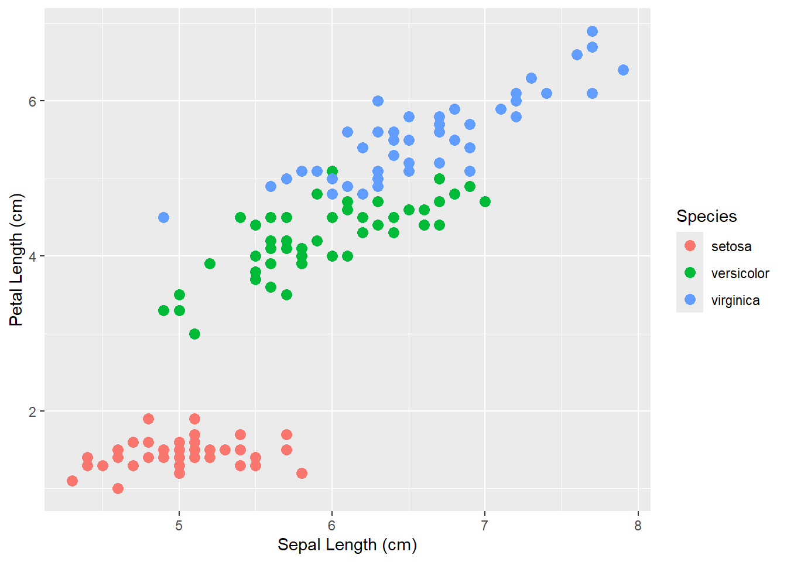
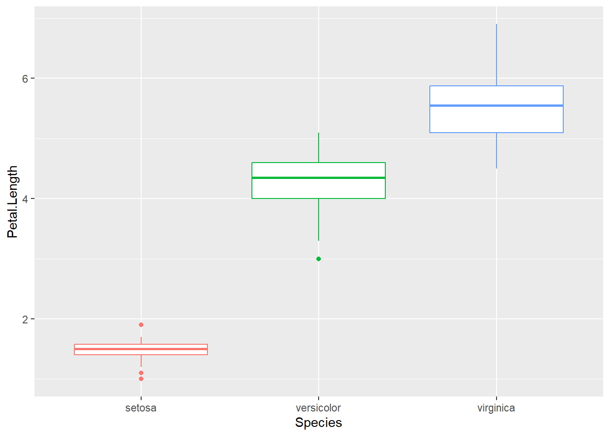
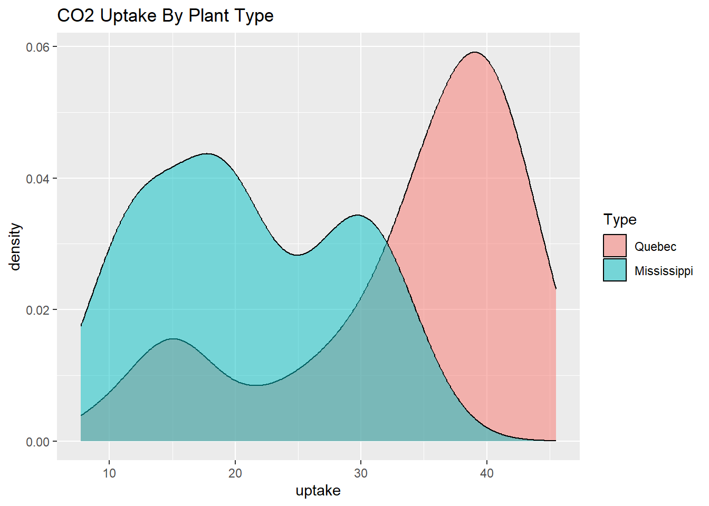
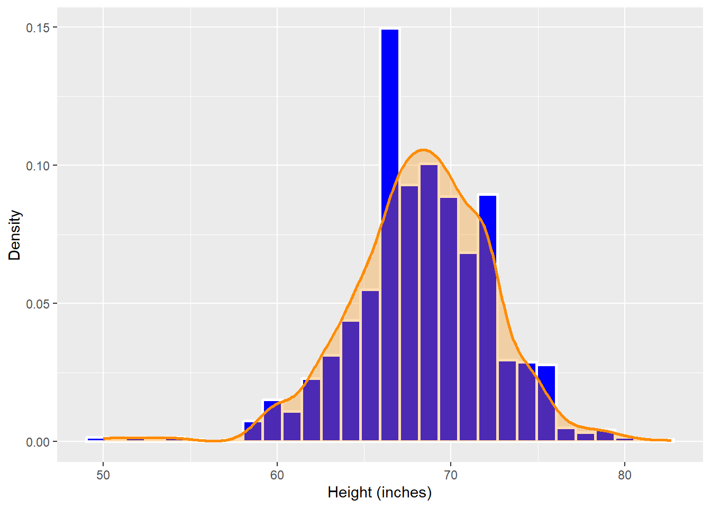

library(dplyr)
library(dslabs)
library(ggplot2)Chapter 16 Practice
Loading packages
Task 1
Three steps to ggplot: 1. Assigning a dataframe: This just tells ggplot() which dataset to use for the graph/figure. 2. Mapping aesthetics: This step assigns variables to the x and y axes of the graph. 3. Adding geometric objects: In this step, you tell R how you want your data to be visualized, like as a scatterplot, histogram, bar graph, etc. During this step you can also do more aesthetic mapping, which will just apply to the specific geometric object added.
Task 2
🎯 I need to make a scatterplot for the iris dataset, assigning sepal length to the x-axis and petal length to the y-axis. The points should be colored by species.
# ⚡ Code
Pretty_Flowers <- iris %>%
ggplot(aes(x = Sepal.Length, y = Petal.Length, color = Species)) +
geom_point(size = 3) +
xlab("Sepal Length (cm)") +
ylab("Petal Length (cm)")# ✅ Checks
class(Pretty_Flowers)[1] "gg" "ggplot"Pretty_Flowers
🗣 It appears that there is overlap in sepal length between all 3 species, but the petal lengths are more distinct between the 3 species. Iris setosa has much shorter petals than the other two species, while the lengths of both sepals and petals overlap between I. versicolor and I. virginica.
Task 3
🎯 I need to create a boxplot comparing the spreads of petal lengths between the 3 Iris species.
# ⚡ Code
Petal_Spread <- iris %>%
ggplot(aes(x = Species, y = Petal.Length, color = Species)) +
geom_boxplot(show.legend = FALSE)# ✅ Checks
class(Petal_Spread)[1] "gg" "ggplot"Petal_Spread
🗣 It appears that Iris virginica has the greatest spread in petal lengths. Graphing the dataset as a boxplot allows me to see the spread of the values by species easier, as well as the central values and outliers for each species.
Task 4
🎯 I need to create a density plot comparing the distributions of CO2 intake by plant type, making the fill partially transparent, and I need to add a title to my graph.
# ⚡ Code
CO2_Graph <- CO2 %>%
ggplot(aes(x = uptake, fill = Type)) +
geom_density(alpha = 0.5) +
ggtitle("CO2 Uptake By Plant Type")✅ What checks can I do to confirm that the code worked as expected?
# ✅ Checks
class(CO2_Graph)[1] "gg" "ggplot"CO2_Graph
🗣 The overlap in distributions between the two plant types suggests that the two plant types might not significantly differ in their CO2 uptake.
Task 5
🎯 I need to create a graph with two layers: a histogram showing distributions of heights, and then a (partially transparent) density curve of heights layered over the histogram. I need the histogram bars to be blue and density curve to be orange.
# ⚡ Code
Tall_Density <- heights %>%
ggplot(aes(x = height)) +
geom_histogram(aes(y = after_stat(density)),
size = 1,
fill = "blue",
color = "white") +
geom_density(color = "darkorange",
fill = "darkorange",
alpha = 0.3,
size = 1) +
xlab("Height (inches)") +
ylab("Density")Warning: Using `size` aesthetic for lines was deprecated in ggplot2 3.4.0.
ℹ Please use `linewidth` instead.# ✅ Checks
class(Tall_Density)[1] "gg" "ggplot"Tall_Density`stat_bin()` using `bins = 30`. Pick better value with `binwidth`.
🗣 The density curve provides a better visualization of the overall shape of the distribution. It does make it easier to recognize the distribution as normal.
Task 6
In a histogram, there can sometimes be irregularities, like with the large spike near the center of the distribution in the Tall_Density graph. These irregularities can sometimes make it harder to distinguish a symmetrical, normal distribution from a skewed distribution. Including a density curve smooths over the irregularities, allowing you to better see the overall shape of the distribution. Using a density curve in these situations might be more helpful. Additionally, when considering probabilities of certain sampling outcomes, a density curve would be more useful than a histogram.